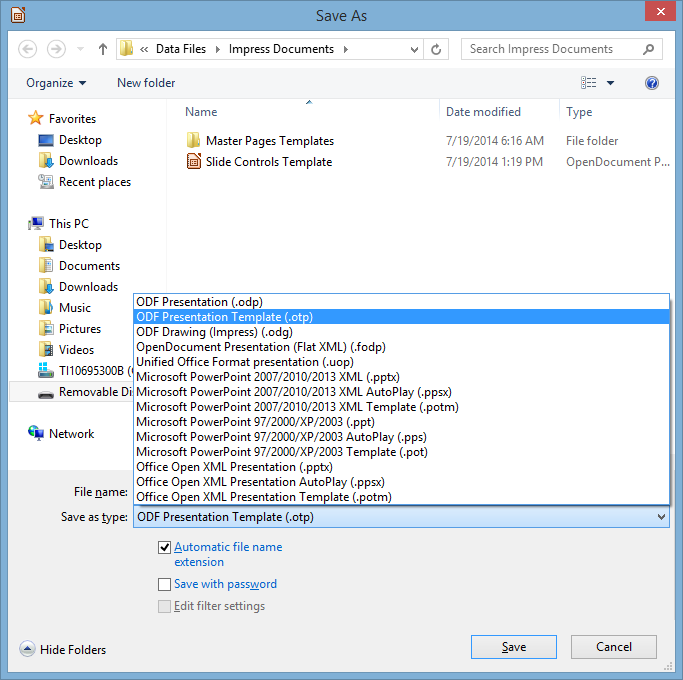

Lesson 10 IMPRESS Beyond the Basics¶
10 IMPRESS beyond the basics
Making interactive, non-linear slide shows
LEARNING OUTCOMES
In this tutorial you will be introduced to the basics of non-linear interactive Impress slide shows, along with some more advanced formatting and impact-enhancing tools. Amongst the skills you will learn are:
- Creating and using Master Pages to add slide controls to presentations
- Using hidden slides
- Formatting and enhancing graphics
- Inserting sounds, clip art, movies, and hyperlinks
BEFORE YOU BEGIN
Setting up for the tutorial
If you completed Lesson 1 of these tutorials, you can skip the rest of this section and proceed directly to the next section (10.1 Creating a Master Page…—next page). If you did not complete Lesson 1, then you must do this now, before proceeding with the rest of Lesson 10.
The set of Work Files for LibreOffice ideally should be stored on a Flash drive (USB drive) in three folders named Base Files, Impress Files, and Miscellaneous Files. You need to create a fourth folder for the data files that you will be creating while working your way through the tutorials. This fourth folder will be called Data Files.
Here are the steps to prepare these folders now before proceeding with this tutorial.
First, Unzip the set of Work Files for LibreOffice by double clicking on the File name on your computer (your instructor will help you with this if you are working with a class) and Extract them onto your flash drive
Double click on the Work Files for LibreOffice folder to open it
Now, inside the Work Files for LibreOffice folder you need to create a new, fourth, folder called Data Files. Here’s how you do this.
In the Work Files for LibreOffice folder, select New Folder (Fig. 10.1).

Fig. 10.1 Creating a New Folder
The system will create a new folder for you and then wait for you to give it a name of your choice (Fig. 10.1 above).
Call the new folder Data Files
During the course of these tutorials you will be storing many files in this Data Files folder.
10.1 CREATING A MASTER PAGE TO ADD SLIDE CONTROLS TO AN EXISTING PRESENTATION
Creating Slide Controls
Slide Controls (otherwise known, in LibreOffice speak, as Interaction…) are buttons or objects that you insert onto a slide or slides to tell Impress, by clicking on them, to advance from one slide to the next slide, or to the previous slide, or to the first slide, and so on (Fig. 10.2).
Fig. 10.2 Interaction options
Creating a standard set of Slide Controls is simple enough. The best way to do this is to create a Master Page Template which has on it the set of Slide Control buttons that you’ll be able to use for any presentation that you’ll be building, whether now or in the future.
Open a new LibreOffice Presentation document, and go to File > Save As… (Fig. 10.3)

Fig. 10.3 Saving a Master Page Template
In the Save As dialog box, navigate to your USB drive > LibreOffice Work Files > Data Files > Impress Documents
Click on the down arrow at the end of the Save as type: data entry box (Fig. 10.3 above) and, in the menu of file types that pops up, select ODF Presentation Template (.otp)
Name the new document Slide Controls Template and click on Save
In the new Impress presentation document you want to start with a Blank Slide layout.
Select the Blank Slide layout in the menu of Layout templates on the right of the Impress window (Fig. 10.4)
Fig. 10.4 Selecting the Blank Slide layout
Now you’ll use two of the Basic Shapes in the Drawing Toolbar (Fig. 10.3 above) to create a set of Slide Control buttons. You’ll end up with something like the set of Slide Control buttons illustrated on the left in Fig. 10.5.
Fig. 10.5 Different Slide Control styles for a typical presentation
The set of Slide Controls on the right, which uses one of the Block Arrows in the Drawing toolbar, is another example of what you can do. Creating these Slide Controls is simple enough, though can be time-consuming because of the detail involved. Like all design, it involves your creative skills, and doing it will enhance those creative skills, so let’s get on with it.
In the drawing tools set of Basic Shapes, click once on the Rectangle, Rounded tool and slide the pointer—which changes into a plus sign (+)—onto the slide (Fig. 10.6)

Fig. 10.6 Rounded Rectangle tool in the set of Basic Shapes
Drag with the pointer to draw a rounded rectangle near the bottom center of the blank slide (Fig. 10.7)
Fig. 10.7 Rounded rectangle
Now select any color to Fill the Area of the rectangle with some contrasting color for the border (see Fig. 10.6 above)
Next, in the drawing tools set of Basic Shapes, click on the Isosceles Triangle tool (Fig. 10.5 previous page) and drag with the pointer to draw a small triangle inside the rounded rectangle shape then use the Rotate tool to rotate the triangle to the right 90 degrees (Fig. 10.8)

Fig. 10.8 The Triangle shape inside the Rectangle shape
Get the idea? If you’ve been successfully following along, you now know how to create any buttons you want. Feel free to create your own set of Slide Controls illustrated on the left in Fig. 10.4 on the previous page. But for the sake of this exercise (and maybe your sanity!), the author has completed the two sets of four buttons and saved them, with the name Slide Controls Template, in the Impress Documents folder as a Master Page Template so that you can use them for the exercises that follow.
Adding slide controls to an existing presentation
For the sake of uniformity, you are going to work with a version of the Screenbeans presentation you may have developed in Lesson 9 and which has been recreated especially for this tutorial.
In the Impress File menu click on Open
Navigate on your USB drive to the Work Files for LibreOffice
Impress Files folder, then double click on the file Problems and Solutions to open it
You’ll be making changes to the Problems and Solutions presentation, and since you may want to have a friend work through this tutorial at a later date, it’ll be a good idea to save the version you are going to work on in the Impress Documents folder in your Data Files folder, thus preserving the original version.
Go to File > Save As…, navigate on your USB drive to the Work Files for LibreOffice > Data Files > Impress Documents folder, then click on Save
You’re going to put Slide Controls on each of the slides in the Problems and Solutions presentation. The Title slide will have two Slide Controls—one to go to the next slide and another to go to the last slide. The last slide will also have two Slide Controls—one to go to the previous slide and another to go back to the beginning of the slide show. Every other slide will have all four of the Slide Controls.
Fig. 10.9 shows you how the Title slide will look after you’ve added the Slide Controls.
Fig. 10.9 The Slide Controls on the Title slide
The Slide Controls are waiting for you to copy them from the Slide Controls Template Master Page, so you need to open that file first.
Navigate on your USB drive to the Work Files for LibreOffice
Data Files > Impress Documents > Master Page Templates folder, then double click on Slide Controls Template to open it
For the Problems and Solutions Title slide you want just the last two of the Slide Controls—to go to the next slide and to go to the last slide (Fig. 10.10).
Fig. 10.10 Selecting and copying the Slide Controls
Make sure you have the Slide Controls Template Title Slide in Normal View, then, in the Drawing toolbar, click on the Select tool (Fig. 10.10 above)
Now drag with the mouse to select just the last two of the set of Slide Controls on the left (see Fig. 10.10 above), then hit Ctrl-c to copy those two Slide Controls to the clipboard
Switch back to the Problems and Solutions presentation, which is already open on your screen, and hit Ctrl-v to paste the Slide Controls from the clipboard onto the Title slide, then use the arrow keys on the keyboard to move the Controls to the right so that they end up in the lower right hand corner of the Title slide (see Fig. 10.9 on the previous page)
You can adjust the size of the Slide Controls any time you want by clicking on them and dragging on the handles.
If the Slide Controls looks too large or too small to you, go ahead now and click on them, grab one of the handles and adjust the size to your satisfaction
Save the presentation when you’re satisfied everything looks OK on the Title slide
You should now see two professional-looking Slide Controls on the Problems and Solutions Title slide. We’ll test them shortly. First, though, you’re going to put all four of the Slide Control tools on the next seven slides.
As you did before, click on the Select tool in the Drawing toolbar and drag around all four of the Slide Control buttons to put the green handles around them (Fig. 10.11)
Fig. 10.11 Selecting and copying the four Slide Controls
Now right click on the selected Slide Controls and, in the context menu that pops up, select copy to copy the Slide Controls to the clipboard
In Slide Sorter View, double click on slide #2 to bring it up in Normal View, and hit Ctrl-v to paste the copy of the four Slide Controls from the clipboard onto slide #2
Don’t click on the Slide Controls—you want the small green handles to stay around them; again use the arrow keys on the keyboard to slide the Controls into position, this time in the lower left hand corner of Slide #2 (Fig. 10.12)

Fig. 10.12 Position the Slide Controls in the lower left hand corner of slide #2
Copying the Slide Controls to other slides
Next, you’re going to put the four Slide Controls on each of the next seven slides. You already have them on the clipboard, so all you have to do is paste them as a group, slide by slide.
In the Slide Sorter View, double click on slide #3 to bring it up in Normal View, and press Ctrl-v to paste the buttons onto the third slide
Notice that the buttons are pasted into the exact same place as where you positioned them on the previous slide (Slide #2).
Now go to each of the remaining six (6) slides in the presentation and do the same
Better Save your work to this point, then switch back to Slide Sorter View to see how everything looks—should be much like Fig. 10.13

Fig. 10.13 All the slides now have the Slide Controls
Adding an Acknowledgements slide
The Problems and Solutions presentation is missing one final slide—the Acknowledgements slide, which should accompany any presentation where you use information or audio-visual material that is not your own. Adding a new slide to a presentation is easy.
First, you want the Acknowledgements slide to be that last slide in the show, so, in the Slide Sorter View, right click immediately after the thumbnail for slide #10 to bring up the small New Slide dialog box
Click on the New Slide dialog box to start a new slide (Slide #11)
The layout for the new slide, as you can see, is the same as the layout for the previous 8 slides, namely a Two Content layout. But for the Acknowledgements slide it will be best if it is a Title slide layout.
In the Slide Sorter View, make sure Slide #11 is selected, then click on the Properties icon at the top of the set of design icons on the extreme left side of the Problems and Solutions presentation window (Fig. 10.14) to bring up the Layout menu and,
in the Layout menu, select the Title, Content slide layout
Fig. 10.14 Selecting the Title, Content slide layout
You’ve just pasted the four Slide Controls onto each of the previous 7 slides, so the buttons are still available on the clipboard for you to paste onto the new last slide.
Switch to the Normal View for slide #10, the last slide in the show, and hit Ctrl-v to paste the four Slide Controls here, too
As it happens, the set of buttons is slightly different on this last slide. You still want the Slide Control to go back to the Go to previous slide, and you need the Slide Control that returns you to the beginning—the Go to first slide Control. But you don’t need a button to go to the next slide; nor do you need a button to go to the last slide; the Acknowledgements slide is already the last slide in the show.
So…, first click anywhere on the slide (but NOT on the Slide Controls) to deselect the Slide Controls, then click on the Select tool in the Drawing toolbar and drag around the two rightmost Slide Controls to put the green handles around just the two of them (Fig. 10.15), then hit the Del(ete) key

Fig. 10.15 Selecting just the two rightmost Slide Controls
Better save your hard work (Ctrl-s)
Now all you need to do is type the text onto this Acknowledgements slide.
Click where you see “Click to add Title” and, in the Title box, type Acknowledgements
Next, c
lick in the Click to add Text box and, by way of Acknowledgements, type the text you see in Fig. 10.16

Fig. 10.16 Final version of the Acknowledgements slide
After you type the line: “Text Courtesy of Bernie Poole” hit Enter, then hit the backspace key to get rid of the bullet, press Enter again, hit backspace to get rid of the bullet, then type the last line: “Hit Esc(ape) to end the presentation”
Finally, drag across the three lines of text to highlight them and, in the Formatting toolbar, change the Font Size to 28
Hit Ctrl-s to save this (almost final) version of the Problems and Solutions presentation
Your show is almost ready, but first you have to learn about hidden slides.
10.2 USING HIDDEN SLIDES
Hidden Slides are slides that will be bypassed, unseen by the user as he or she clicks through a presentation, except when the user clicks on a Slide Control that specifically sends them to the Hidden Slide.
Here are the steps to create a Slide Control on one slide which will take the user to a specific Hidden Slide in the Screenbeans slide show.
In the Slide Sorter View, double click on Slide #2 (the Confusion slide) to open it in Normal View
Click to position the cursor right at the end of the text that you typed in the slide’s text placeholder (after the words …tougher than it really is)
Hit Enter to go to a new line, then type **If you’d like to read a quote about problem-solving, click here: **
In the Slide Sorter View, right click between Slide #2 and Slide #3 and click on New Slide in the New Slide dialog box to insert a new slide (which will now become the new Slide #3)
Immediately, Impress inserts a new empty slide right after the second slide in the show.
Now, you want this to be a Title slide layout, so, still in the Slide Sorter View, and with the new Slide #3 selected, click on the Properties icon to bring up the menu of slide layouts and click on the Title slide layout
You want this new slide to be a Hidden Slide.
In the Slide View toolbar click on the icon to Hide Slide (Fig. 10.17)

Fig. 10.17 The Hide Slide icon in the Slide View toolbar
Notice that now, in the Slide Sorter View, Slide #3 is screened out, which indicates that this is a Hidden Slide (Fig. 10.17).
Click in the Title placeholder on the new slide (where it says Click to add Title), and type the following quotation (including the quotes): “Quality is in the details.” then drag across the quote to highlight it and change the font size to 48
Click in the subtitle placeholder on the new slide (immediately below the Title placeholder) and type the following: Bernie Poole, Esq.
The Hidden Slide with the quote is now complete. But it’s hidden, so you have to give Impress (and the user) a way to find it by creating a new Slide Control that links to it.
In the Slide Sorter View, double click on Slide #2 (the Confusion slide) to make it the active slide in Normal View
In the Drawing toolbar click on the Block Arrows icon and, in the Block Arrows menu, select the Notched Right Arrow shape
Notice that the arrow pointer changes to a cross hair ().
Without clicking the mouse button, roll the mouse cursor up over the slide and
position the cross hair after the colon at the end of “If you’d like to read a quote about problem-solving, click here: “ (Fig. 10.18), then hold down the left mouse button and drag to create the Slide Control button that you are going to use to link to slide #3—the hidden slide
Fig. 10.18 Placement of the Slide Control linking to the hidden slide (slide #3)
Let go of the mouse button when you’re done—you can adjust the size and position of the button if you want by clicking on it and then dragging on the handles around the button
Now right click on the new button and, in the context menu that pops up, select Interaction…
In the Interaction dialog box, click on the down arrow at the end of the Action at mouse click data box (Fig. 10.19) and, in the drop down menu, select Go to page or object, then in the list of slides that is displayed, click to select Slide 3, then click on OK

Fig. 10.19 Linking the new Slide Control to the hidden slide
This new Slide Control provides a link from slide #2 to the hidden slide #3. When you run the show shortly and get to slide #2, if you click on this Slide Control, you will go to slide #3. But if you do not click on this Slide Control, slide #3 will be bypassed because it is a hidden slide.
You have to do one more thing to complete the content on the hidden slide (slide #3). You need to put a Slide Control on slide #3 to go to the next slide (slide #4). Can you remember how to do it yourself? If so, go ahead; but if you need help, here are the steps to follow:
In the Slide Sorter View, double click on slide #2 to bring up the slide in Normal View, then, in the Drawing toolbar, c
lick on the Select tool and drag to select the third of the four Slide Controls (the Slide Control to go to the next slide), right click on it, then, in the context menu that pops up, select Copy the Slide Control to the clipboard
Next, in the Slide Sorter View, double click on slide #3 to bring up the slide in Normal View, and press Ctrl-v to paste the Slide Control onto the hidden slide
Then, while the button is still selected, drag on the green handles to make the Slide Control about twice its size and use the arrow keys to move it over to the lower right corner of the slide (Fig. 10.20)
Fig. 10.20 The repositioned and resized Slide Control on the Hidden Slide
Right click on the new Slide Control and, in the context menu, select Interaction… > Go to next slide
Save all the good work you’ve done so far, then Run the Problems and Solutions slide show from the start (Slide Show menu > Start from first slide), trying out every slide, including the Slide Controls that you just created for the Hidden Slide
10.3 ANIMATION SCHEMES
Impress Animation is a way of bringing objects, such as text and pictures, to life on the screen, controlling and sequencing how text and other slide objects emerge onto the screen during a presentation—sliding in from the right or left, or fading in, and so forth. Let’s try some of the Impress Animations now, using the Screenbean figures as our models.
The Screenbean figure must be selected in order to apply animations and other effects to it, so, in the Slide Sorter View, click on the thumbnail for slide #2 (the slide with the Confused Screenbean) and click to select the Screenbean figure (you’ll see the green handles around it)
Right click on the Confused Screenbean figure and, in the context menu that pops up, select Custom Animation
This brings up the Custom Animation pane on the right side of the Impress window (Fig. 10.21).
Fig. 10.21 The Custom Animation pane
Click on the green plus sign/cross to bring up a menu of built-in LibreOffice animations (Fig. 10.22)
Fig. 10.22 LibreOffice Animations dialog box
For the Screenbean figure on Slide #2, in the menu of built-in LibreOffice animations, select the first option: Appear, click on OK, then, in the Effect section > Start entry box, select After Previous (Fig. 10.23)

Fig. 10.23 Effect section > Start data entry menu
To check out the animation, go to the Slide Show menu > Start from current Slide and watch as Impress gives you a demo of the effect
In the Slide Sorter View, switch to Slide #4 and take a few minutes to preview a few other animations to get a feel for what is available
When you are done experimenting, go from Slide #4 to Slide #10 and, for each Screenbean figure, select any one of the Animations you like, then, in the Effect Appear section, select the option to Start > After Previous
When you are done selecting animations for all the Screenbean figures, Save the presentation, then go to the Slide Show menu > Start from current Slide to check out the Problems and Solutions presentation once again
Pretty cool. So Impress makes it easy for you to experiment with different schemes, try them out, remove them if you don’t like them, and start over—all part of the design process.
In the File menu select Close
You can change any sequence, and you can also sequence the items to come onto the screen all at once, and so forth. There will be occasions when you will want to alter the sequence because, for example, you may decide that you want to talk about one topic ahead of another. Also, you may want the presentation to be presented as a running display in a conference room or in the lobby of a building.
Bear in mind that it’s not a good idea to apply Animation Schemes everywhere, on all the slides. Animations are best used sparingly, to highlight specific ideas, or to spice things up in a presentation. But too much spice can overwhelm a presentation and take away from its enjoyment or effectiveness.
10.4 Interactive IMPRESS AT WORK
Let’s start by looking at an example of an interactive Impress presentation.
You should still have the Work Files for LibreOffice folder available in the USB port on your computer, so
in the File menu select Open
Navigate (Browse) on your computer to your USB drive > Work Files for LibreOffice > Impress Files folder, then double click to open the Mammal Test presentation
You’re going to examine the Mammal Test interactive presentation which has been prepared for you and which will demonstrate the various features of what makes a presentation interactive and non-linear.
In the Slide Show menu select Start from first Slide to view the presentation
Follow the directions to move through the slides—be sure to click on the answers when indicated
Answer at least one question incorrectly so you can see how the presentation takes you back to re-answer a question should you get it wrong
Make sure your speakers are turned up so you can hear the sound, and notice the clip art and animations that are added to this show
Features to look for in the demonstration presentation
General layout of an interactive presentation used for assessing knowledge
Think of a test in your classroom. You start with a title on your test, so the students know what subject matter the test is on and who wrote it. Then you have an introduction, which might further define the subject matter for the test. Alternatively, if used as a review, the introduction might summarize the concept being tested.
A good interactive slide show thus begins with a title and an introduction slide (Fig. 10.24).
Fig. 10.24 Title and Introduction Slides
You then move to the set of directions which tell the user how to complete the test. The test questions follow right on after the directions.
An effective interactive slide show should have a directions slide because a good teacher never assumes that all the students know how to take a particular test. After the directions come the question slides, which contain the questions themselves and the options for answers (Fig. 10.25).
Fig. 10.25 Directions and Question One Slide
An interactive Impress presentation has the same elements as any Impress presentation, with one significant difference: it has question slides and feedback slides. In your class, you grade papers and return them, giving the students feedback on their answers.
So, in the Mammal Test slide show, we have feedback slides that tell the user “You’re Right” or “Sorry. Try Again.” (Fig. 10.26).

Fig. 10.26 Question and Feedback Slides
Lastly, in an interactive Impress presentation it’s appropriate to have a concluding slide which tells the students they’re done, followed by an Acknowledgements slide (Fig. 10.27).
Fig. 10.27 Ending and Acknowledgment Slides
In this way, you set good precedent for citing sources, and you also clue your audience to the fact that it’s over! We’ll talk more about the layout of an interactive Impress slide show as you begin creating your own.
Slide Controls and Hyperlinks
In order to move outside the linear box of traditional Impress presentations, we’ve used Slide Controls and Hyperlinks. Slide Controls are the buttons that control your progress from slide to slide as you work through the presentation. In the case of the Mammal Test presentation, they let you either move on to the next question or re-answer the previous one.
An Impress hyperlink, on the other hand, links you directly to a location outside the presentation; if you are on the Web, the hyperlink takes you from one Web site to another, or from a website to your email program. If you are in an Impress presentation, the hyperlink might take you from a slide to your E-mail program, or from a slide in your presentation to a page on the Web.
Notice the transitions and animations in the Mammal Test presentation. The presentation has a simple, clean style—no excessive bells and whistles; just enough to keep the users’ attention.
So much for an overview of using an interactive Impress presentation. It’s time to create your own interactive quiz.
Click anywhere to exit the slide show, then close (File
Close) the Mammal Test presentation when you are ready to continue with the tutorial
10.5 BUILDING AN INTERACTIVE, NON-LINEAR PRESENTATION
You are going to use Impress to prepare a Class Test about the U.S. states and capitals, which will give you the experience to prepare more detailed interactive tests on your own.
Open LibreOffice and go to Create > Impress Presentation to start a new slide show
You should always immediately save a new document; this allows you to give the document a name, as well as the opportunity to save it in a location you want on your disk drive (so that can more easily find it again later!).
Go to File > Save As and, in the Save As dialog box, navigate to your USB Drive > Work Files for LibreOffice
Data Files > Impress Documents folderGive the new presentation the name States and Capitals Quiz, and click on Save
It is usually a good idea to create the text outline for your slides before you select a template for your design theme, slide transitions, animations and so forth. This is because different templates have different slide layouts (bigger title boxes, less room for bulleted lists, and so on). So you will want to get a feel for what will be the text on each slide, before you proceed with design considerations.
This brings to mind a good rule of thumb when creating anything that is designed to provide information for the purpose of effective communication: Substance Before Style! Or, to put it another way, Content Counts! Keep this in mind when developing any Impress presentation.
get to work
Title slide, Intro slide and Directions slide
Fig. 10.28 a-c illustrates the content you will be entering for the first three slidesFollow the directions on the next page to complete this first part of the exercise.
Fig. 10.28a Content for Slide 1
Fig. 10.28b Content for Slide 2
Fig. 10.28c Content for Slide 3
For this presentation you’ll enter the text directly onto each slide using the Normal View (Fig. 10.29).
Fig. 10.29 Enter the text directly onto the slide
Entering data directly onto slides can be tricky because you have to be careful how you use the Enter and Tab keys, so follow the directions carefully.
The default layout for the first slide in any new Impress show is always a Title slide.
In Normal View, click inside the Title box (Fig. 10.29 above) and type U.S. States and Capitals Quiz, then hit Ctrl-Enter to move the cursor down to the sub-title box
Hit the backspace key to get rid of the bullet, in the formatting toolbar click on the Center alignment icon, then type, By ______ (type your name in the blank)
The sub-title By _______ (your name) should now be in the sub-title box of your first slide.
Now, in the Insert menu select Date and Time… to bring up the Date and Time dialog box (Fig. 10.30)

Fig. 10.30 The Date and Time dialog box
In the Date & Time dialog box, click to put a check mark next to Date and Time, then click on the radio button next to Variable and, in the drop down menu of date/time formats, select the format indicated in Fig. 10.30
Click to put a check mark next to Page number, then click on Apply to All
In Slide Sorter View, right click immediately to the right of Slide #1, right click on the mouse, and then click on the New Slide button that pops up to start a new slide
The default Slide Layout for the first slide in a presentation is Title slide, but you want a different, Title, Content, layout for Slide #2.
Right click on the new slide and, in the context menu that pops up, select Slide Layout to bring up the menu of Slide Layouts in the pane on the right side of the Impress window
You want the Title, Content layout for Slide #2 and subsequent slides, so, in the menu of Slide Layouts, click on the thumbnail for Title, Content layout
Get to know the Keyboard Shortcuts
Notice that Ctrl-Enter moves the cursor to the next text box on a slide. You hit Enter only when you want to advance to the next line inside the text box where you’re typing text.
Continue to type the information for the next 2 slides (see Fig. 10.28b and 10.28c above on pages 298 and 299)
As you just did for the previous two slides, press Ctrl-Enter to move from one text box to the next (for example, from a slide’s Title box to the Text box that has its bulleted list).
Get used to using these keyboard shortcuts rather than clicking in each textbox. For the more experienced user, Keyboard Shortcuts are a faster way to go.
Question and Feedback slides
Next you are going to type the 5 Question and Feedback slides—Slides 4-8 (Fig. 10.31a and b).

Fig. 10.31a Content for Slides 4, 5 and 6
Fig. 10.31b Content for Slides 7 and 8
If you are an experienced user of the Microsoft Office programs such as Word, and if you already have completed the introductory Impress tutorial (Lesson 9), you should be able to carry out the following tasks without step-by-step help. However, in case you need guidance, here are the directions for the first test question slide.
Click on the tab for Normal View, then, with the cursor waiting in the Title box for slide #4, in the Formatting toolbar click on the Left alignment icon
Now type the title Question One, then hit Ctrl-Enter to skip to the text box below the Title box
You need to remove the Bullet at the beginning of the new line. This is simple enough.
Before you start typing the first question (Which is the capital of Texas?), in the Formatting toolbar click once on the Bullets On/Off icon (Fig. 10.32) to remove the Bullet at the beginning of the line, then type the question: Which is the capital of Texas?

Fig. 10.32 The Bullets on/off icon in the Formatting toolbar
Follow the same directions to complete the entries now for slides #5 and #6, then Save your work
Now that the Titles and Questions are on the question slides, you next need to type the content for the two feedback slides (see slides 7 and 8 in Fig. 10.31b on the previous page).
Click on the Slide Sorter View, right click after Slide #6 and click on the small dialog box to start a New Slide (Slide #7), then double click on the new slide to open it in Normal View
You need to change the layout of the feedback slides, because all you need on them for now is a Title box. Fortunately, Impress has a layout called Title Only.
In the Slide Layout menu on the right side of the window, select the layout for Title Only
Now go ahead and, in the Title box for slide #7, type You’re Right!
Create a new slide #8, which will again have a Title Only layout, and, in the Title box for slide #8, type Sorry. Try again.
Next, you must place a copy of these two feedback slides after each of the other question slides. Copy and Paste is the easiest way to do this.
In Slide Sorter View, click on slide #7, hold down the Shift key and at the same time click on slide #8 to select both slides at once, then hit Ctrl-c on the keyboard to copy these two slides to the clipboard
Now, with slides #7 and #8 on the clipboard, click between slides #4 and #5 and hit Ctrl-v to paste the two answer slides between them; so what was slide #5—Question Two—will be bumped to slide #7 (Fig. 10.33)
Fig. 10.33 The full set of Question and Answer slides
Do the same thing to Paste the answer slides right after what will now be slide #7, then Save your work once more before going on
The States and Capitals Quiz Impress now has 12 slides—the three introductory slides and the nine question and answer slides.
For any Impress show, it is important to have a slide that signals the end of the main body of content (such as the end of testing in the case of our show). Impress presentations shouldn’t end abruptly. Also, it is important to give credit where credit is due.
So, at the conclusion to most any slide show you should include an Acknowledgements slide. These are your next two tasks.
Create two new slides (Slide #13 and Slide #14); Slide #13 will be Title Only layout and Slide #14 will be Title, Content layout
Type the content for slides #13 and #14 as illustrated in Fig. 10.34, then Save your work again
Fig. 10.34 End of Test and Acknowledgement Slides
10.6 MAKING THE PRESENTATION INTERACTIVE
You are now going to tackle the two trickiest steps in this lesson. They are:
- Creating four hyperlinking Slide Controls on each of the three Question slides which the user will click on to indicate his or her answer to the question.
- Creating a Slide Control on each of the six Feedback slides that will hyperlink to the appropriate Question slide.
Creating Text Objects for the Slide Controls on the Question slides
A Text Object is text that has been converted into a LibreOffice Object so that it can be used as a hyperlink and can also be animated, just the same as any image.
Let’s do the first Question slide together (Slide #4), and then you’ll know what to do for the other two question slides (Slides #7 and #10).
In Slide Sorter View, double click on Slide #4 (Question One) to open it in Normal View
In the Drawing toolbar at the bottom of the window, click on the Rectangle tool to select it, then draw a rectangle about ½” below the Question and centered on the slide (Fig. 10.35)
Fig. 10.35 Draw a rectangle about ½” below the Question
With the rectangle still selected, hit Ctrl-c to copy it, then hit Ctrl-v to paste the copy back onto the slide (for reasons best known to itself, LibreOffice pastes the copy directly on top of the original, so you’re not aware of anything having been done—but the copy is there!)
Use the arrow keys on the keyboard to slide the copy down below the original, so that now you have two identical rectangles on the slide (Fig. 10.36)
Fig. 10.36 The two identical rectangles on Slide #4
Now use the Select tool (left end of the Drawing toolbar) to drag to select both rectangles, hit Ctrl-c to copy them, then hit Ctrl-v to paste the copies back onto the slide, and use the arrow keys to slide the copies down below the originals, so that now you have four identical rectangles on the slide (Fig. 10.37)
Fig. 10.37 The four rectangles ready for processing into Text Objects
At this stage it will be a considerable time saver if you copy the four rectangle shapes and paste them onto the other two Question slides—Slide #7 and Slide #10.
Use the Select tool again to drag to select all four rectangles, and hit Ctrl-c to copy them
In Slide Sorter View, double click on Slide #7 to open it in Normal View and paste the four rectangles directly onto the slide
Do the same for Slide #10, then Save your work
Now for the conversion of the Rectangles into Text objects. We’ll do this together for Slide #4, then you can follow the same steps yourself to convert the rectangles on Slide #7 and Slide #10.
- In Slide Sorter View, double click on Slide #7 to open it in Normal View, then double click on the first rectangle and type the first Answer: Houston
- Double click on Houston to highlight it and, in the Text formatting toolbar, increase the Font Size to 28 pt
- Next, double click on the second rectangle and type the second Answer: Dallas, then double click on Dallas to highlight it and, in the Text formatting toolbar, increase the Font Size to 28 pt
- Next, double click on the third rectangle and type the third Answer: San Antonio, then double click on San Antonio to highlight it and, in the Text formatting toolbar, increase the Font Size to 28 pt
- Finally, double click on the fourth rectangle and type the fourth Answer: Austin, then Double click on Austin to highlight it and, in the Text formatting toolbar, increase the Font Size to 28 pt
Better Save your work again, then follow the five (5) steps above to enter the Answers for Slides #7 and #10
The answers for Slide #7 are as follows:
California
Alaska
Texas
Rhode Island
The answers for Slide #10 are as follows:
Hawaii
Florida
California
Mississippi
Over to you. Don’t forget to save your work when you’re done.
Linking the Text Objects to the appropriate Feedback Slides
Now you must revisit each of the four Answers on the three Question slides to tell Impress which slide the Answer should link to after it is clicked. This is where it gets tricky. If the answer the student chooses for each question is correct, the link must send him or her to the You’re Right! Slide, and move on to the next question; if the answer is incorrect, it must send him or her to the Sorry. Try again. Slide, and return him or her back to the original question to try again.
If you’ve never done anything like this before, the best way to understand the process is to do it. So here goes!
In Slide Sorter View, double click on Slide #4 (Question One) to open it in Normal View, then right click on the Houston button and, in the Context menu, select Interaction…
This brings up the Interaction dialog box (Fig. 10.38).
Fig. 10.38 The Interaction dialog box
Houston, the first possible answer, is the wrong answer; it is NOT the capital of Texas. So we want the student to be linked to the feedback slide that says the answer is wrong.
In the Action at mouse click entry box, click on the down arrow to bring up the menu of options and select the option to Go to page or object, then click on Slide 6 and click OK
Repeat these steps for the answers Dallas and San Antonio (also wrong answers)
Now, highlight Austin (the correct answer)
Since Austin is in fact the capital of Texas, we want to link that answer to Slide #5, the feedback slide that states that the correct answer has been selected.
Right click on the Austin button and, in the context menu, select Interaction… and hyperlink to Slide 5
Now you need to put a Slide Control button on each of the Answer slides (Slides 5 and 6).
With Slide 5 selected in Normal View, in the Drawing toolbar at the bottom of the window click on the Block Arrows icon to bring up the set of Block Arrow shapes and click to select the Chevron shape (Fig. 10.39)
Fig. 10.39 The Chevron shape in the set of Block Arrows shapes
Now draw a nice big Chevron shape towards the right side of the slide (Fig. 10.40)
Fig. 10.40 The Slide Control on Slide 5
Right click on the Chevron shape and, in the context menu, select the Area tab (Fig. 10. 41)

Fig. 10.41 Choosing a Color for the Slide Control
Click on the Area tab and, in the drop down menu of colors, select any color you like for the Chevron shaped Slide Control
Next you need to put a chevron-shaped button on the Wrong answer slide (Slide #6). Easiest way to do this is to copy and paste the button you just created for Slide #5.
On Slide #5, click on the Slide Control to select it and hit Ctrl-c, switch to Slide #6 and hit Ctrl-v to paste the button onto Slide #6
You want this Wrong answer button to point back to Question One, so you need to flip it horizontally.
Right click on the Slide Control and, in the context menu, select Flip > Horizontally, then Save your work before you proceed
Now you need to select the correct hyperlink for these two new buttons. For the button on the correct answer slide (Slide #5) you want to send the student on to the next question (Question Two), which is slide #7; but for the button on the wrong answer slide (Slide #6) you want to send the user back to Question One (Slide #4).
On Slide #5, right click on the Chevron shaped Slide Control and, in the context menu, select Interaction… and hyperlink to Slide 7
On Slide #6, right click on the Chevron shaped Slide Control and, in the context menu, select Interaction… and hyperlink to Slide 4
Time to make sure each answer on the Question One slide, and each button on the Answer slides is correctly hyperlinked by testing each of them in turn.
With Slide 4 selected in Normal View, in the Slide Show menu select Start from current Slide, then click on each of the True buttons one-by-one, make sure it sends you to the correct Answer slide, then make sure the chevron-shaped Slide Control on each of the answer slides sends the user forward or back to the correct question
Everything OK? If not, fix any errors—hopefully there won’t be any, but you never know. Breathe a sigh of relief if all went according to plan.
Now, follow these same series of steps (if you need help, the directions start on Page 320 above) to activate the Slide Controls with hyperlinks for Slides 7 thru 9 (where the correct answer is Alaska), and Slides 10 thru 12 (where the correct answer is Hawaii)
Adding Slide Controls to the remaining slides (Slides 1 thru 3 and Slides 13 and 14)
You’re going to need Slide Controls on Slides 1 thru 3, and also on Slides 13 and 14. You should be good at this now, but just in case here are the steps you need to take.
In Slide Sorter View, double click on Slide #1 to open it in Normal View, then, in the Drawing toolbar > Block Arrows icon, click on the Chevron shape
Draw a small Chevron in the lower right corner of the Slide window (Fig. 10.42)

Fig. 10.42 Slide Control to go the Next Slide
Right click on the button, then, in the context menu, select Interaction… and select the Action at mouse click option to Go to next slide
While you’re at it, hit Ctrl-c to copy the Slide Control to the clipboard
That’s all you need on the first slide. But you need the same button on Slides 2, 3, 13, and 14. Fortunately, you have it copied to the clipboard, so…
In Slide Sorter View, double click on Slide #2 and paste the Slide Control onto the slide
Do the same for Slides 3, 13 and 14
On Slides 2, 3, and 14 you need a second Control button to Go to previous slide.
In Slide Sorter View, double click on Slide #2 again, right click on the Slide Control in the lower right corner, copy it, then paste it (Ctrl-v)
Right click on the Slide Control again, and, in the context menu select the option to Flip > Horizontally, then use the arrow keys on the keyboard to slide this second Slide Control to the left (Fig. 10. 43)

Fig. 10.43 The second Slide Control button in position on Slide #2
Right click on this second Slide Control, copy it, then paste it (Ctrl-v) onto Slides 3 and 14
Hope you’re doing OK, still. Hey, for some people, this is their idea of fun! I hope you feel the same. One last task at this stage of the Tutorial. The last slide, Slide #14, has a Slide Control to go to the next slide, but there is no next slide. So you have to change the Action on mouse click to Exit Presentation.
In Slide Sorter View, double click on Slide #14 if it is not already in Normal View, right click on the rightmost Slide Control in the lower right corner, select Interaction... from the pop up context menu, and change the Action on mouse click option to Exit presentation
Save your work before you proceed (and maybe take a break…)
Making the Text Object backgrounds invisible
On Slides 4, 7, and 10, those Blue rectangles behind the multiple choice answers are unnecessary. It’s easy enough to get rid of them at this stage, though they were necessary while you were developing the Text Objects and hyperlinking them. Let’s make them invisible now.
In Slide Sorter View, double click on Slide #4 and right click anywhere on the first blue rectangle, then, in the context menu, select Line… to bring up the Line dialog box (Fig. 10.44)
Fig. 10.44 The Line dialog box
In the Style drop down menu, select – none – to remove the border around the rectangle shape, then click on OK
Still on Slide #4, right click anywhere on the first blue rectangle, then, in the context menu, select Area… to bring up the Area dialog box (Fig. 10.45)

Fig. 10.45 The Area dialog box
In the Area dialog box, click on the Transparency tab, then in the Transparency mode section make sure the radio button next to Transparency is checked, and set the Transparency percentage to 100%, then click on OK
Cool. Houston now appears as just plain old text, but it’s actually a Text Object which holds a hyperlink (Fig. 10.46)

Fig. 10.46 Text Objects with invisible backgrounds
Now do the same thing to the other 11 Text Object multiple choice answers on Slides 4, 7, and 10, then Save your work when you’re done
Forcing the user to click on a Slide Control to advance to another slide
For the feedback slides such as the one illustrated in Fig. 10.30 above, we must make sure that the user can only proceed from one slide to another by clicking a Slide Control. As it is, when the user clicks the mouse anywhere on the slide, the show will advance to the next slide whether it’s supposed to go there or not.
So here’s how you give the user no option but to click on a Slide Control in order to proceed.
In the Slide Sorter View, hit Ctrl-a to select all the slides, then in the Slide Show menu select Slide Show Settings… to bring up the Slide Show Settings dialog box (Fig. 10.47)
Fig. 10.47 The Slide Show Settings dialog box
Check only the Radio buttons next to Range > All slides and Type > Default, then, in the Options section, make sure you only have check marks next to Mouse pointer visible and Animations allowed—NOTHING else should be checked!
Save your work again

You should test the work you’ve done to this point to make sure it works the way you want it to.
Go to Slide Show menu > Start from first Slide and answer each question incorrectly first, then watch as the Text Object hyperlink takes you to the Wrong Answer feedback slide
Test all the Text Object answers to make sure the hyperlinks you put on them work appropriately; also test to make sure that when you click anywhere on the slide, other than on the Slide Control, the show doesn’t go anywhere
Give yourself a round of applause if everything worked correctly.
If, on the other hand, a hyperlink or Slide Control doesn’t work, don’t panic. You can remove a Slide Control by simply right clicking on it and selecting Cut from the context menu. Then
follow the steps above again carefully, and you should be able to straighten things out.
10.7 FORMATTING YOUR PRESENTATION
Selecting a Master Page
LibreOffice makes it easy to select a background, font type and style, and color scheme for your presentation. All these features are combined into what Impress calls a Master Page.
Earlier we mentioned that you could start your new presentation by picking the Master Page before even typing in the text. Well, as we already discussed, sometimes it is best to wait to select a Master Page until you have an idea of where text should be on the slides and how much text is on each slide. Some Master Pages, for example, have graphics that take more space on the slide than others and might make it hard to read your text.
In the Slide Sorter View, hit Ctrl-a to select all the slides, then click on the Master Pages icon on the right edge of the Impress window (Fig. 10.48)

Fig. 10.48 The Master Pages icon
C
lick on any of the Master Page icons in the menu and wait as Impress propagates the design to all the slides in the Slide Sorter View
Preview several of the available Master Pages before deciding which one you’d like to use
The Master Page chosen for the demonstration show, which is used in the illustrations below, is called AbstractYellow and has the advantage of needing little or no adjustments to be made to the slides after the Master Page is applied. But feel free to use whichever of the Master Pages you want for your presentation.[^1]
When you’ve decided which Master Page you want,
Save the presentation
Tips on color choices for printing
Lesson 9 covered the topic of printing Impress presentations, but this is a good time to mention editing your background for how it will appear on paper. Many of the Master Pages are attractive to look at; however, when you print handouts or slides in black ink, the dark backgrounds make some text hard to read. So, if you plan to print out your show, choose a lighter background for all the slides. Then, when you are ready to print, in the Print Settings section, click on the Color button and, in the Color options, select Grayscale. This reduces the background to more or less plain white with black text, making it easier to read than color. It will also save a lot of money on the ink cartridges for the printer!
Applying different Master Pages to certain slides in a show
Most of the time, we want our show to look the same on every slide. But if you do need to vary the Master Page on different slides, here’s what you do. Let’s say, for example, that you want a different Master Page for the first slide and the last slide.
Change your view to Slide Sorter View, click on the first slide and then hold down the Ctrl button as you click on the last slide to select just those two slides
Click on one of the Master Page thumbnails to Live Preview it; do this for a few themes that look good to you and, when you’ve made up your mind, click on your chosen Master Page to select it, and Save the presentation again
Notice that only those slides you selected have that specific Master Page. You can do this for just one slide or several slides. You’re the boss! You may be thinking that your slide show looks hideous right now. That’s OK; you can change everything and anything once you have the text for each slide in place. You can change the text, too. With Impress (or computer apps in general) nothing is chiseled in stone until you say so! And even then, you can still change your mind.
What you need, above all, when working with a computer app such as Impress is PATIENCE. If you’re always in a hurry, you’d better be either very talented or lucky to do good work. But if you’re patient, Impress will help you to do the best job you’re capable of doing, that’s for sure.
Creating customized, self-designed Master Page Templates
For most users, the Master Pages provided by Impress are more than sufficient to meet their design needs. Other Master Pages can be accessed online. But if you prefer to create your own background, or wish to create a standard Master Page for your school or class, you can save whatever you create as a Master Page Template—a subject we already discussed earlier in the tutorial.
10.8 INSERTING CLIP ART AND OTHER CONTENT
Impress has simplified the process of inserting pictures, clip art, tables, Fontwork graphics, sound and movie clips, and charts. You learned about this in Lesson 9, but it will be good to review what you learned. You’ll also learn in this section how to insert a clickable e-mail address.
Inserting Clip Art
In the Slide Sorter View, double click on Slide #2 (Introduction)
Click on the Properties button on the left edge of the Impress window and, in the Slide Layout menu, click to select the Two Content layout
Slide two should now have the bulleted text on the left, with a box on the right for different types of content, including text and so forth (Fig. 10.49).
Fig. 10.49 Slide Two: Two Content slide layout
Click on the lower left Content Selector tool (the Insert Pictures tool—Fig. 10.52 above)
When you click on the Insert Pictures tool, the Insert Image dialog box will pop up on the screen.
On your USB drive, navigate to the Work Files for LibreOffice
Miscellaneous Files > Practice folder, double-click on the US States image and watch it upload to the slide (Fig. 10.50)Fig. 10.50 Clip art accessed from the web and inserted onto a slide
Sometimes you will need to resize your clip art if it appears too small or too large to fit into your presentation. This is easy enough to do.
If necessary, click once on the clip art to select it, then
click on a corner handle and drag diagonally left, right, up, or down to enlarge or shrink the image
When everything looks good on the slide,
Save the presentation
Inserting other pictures or pictures of your own
A word about Copyright
The simple rule (law) about Copyright © is this: If you can see it, it’s copyrighted.
In other words, if you didn’t create it yourself, and you see it out there for the taking, you should get permission from the author of the work if you intend to use it, especially if you intend to use it for profit.
Like everything in the law, however, it’s open to interpretation. So, if teachers want to use an image they’ve found ‘out there’ to give added meaning or emphasis to something they’re trying to help their students learn, they are not obliged to seek permission from the owner of the art because there is no question that they are using the image for profit (though the owner would undoubtedly be delighted to know their work was being used in this way).
Once you are comfortable locating and placing clip art into your show, try finding pictures and other graphics online. It is simple to insert onto a slide a digital picture that you’ve saved on your computer.
Let’s try this now. If you have a digital picture of your own that you’d like to use for this exercise, feel free to do so. If you do not have a picture of your own, you can use a picture of the author which is saved in the Work Files for LibreOffice.
First select slide #1—the Title slide—in the Home Ribbon > Slides Group click on the Layout tool, and in the menu of Layouts click on the Two Content slide layout, then, on the right side of the slide window, click on the Insert Image tool once again
Now navigate, on your USB drive, to the Work Files for LibreOffice > Miscellaneous Files > Practice folder, and double click on Prof Poole
The picture will quickly appear on the slide (Fig. 10.51), with the handles around it so that you can move it to where you want on the slide and resize it to fit the space where you want it to go.
Fig. 10.51 The Title slide with the picture of the author inserted onto it
Inserting sound
First, make sure you have your computer Speakers turned on (not muted) so that you can hear the sounds you are about to try out
In the U.S. States and Capitals show, we want to give our students a reward for getting each answer correct. So, we’re going to insert applause onto every You’re Right! slide.
Open Slide #5 (the first You’re Right! slide) in the Normal View, then click on the Slide Transition icon on the right edge of the Impress window (Fig. 10.52)
Fig. 10.52 The Sound menu
In the Slide Transition dialog, select any Transition you want (try out a few of them to see what you like), then click on the down arrow at the end of the Sound entry box and select the Sound called Applause
Now scroll to slides #8 and #11 and repeat the above steps (inserting the Applause sound)
You should now have applause on each of your positive feedback slides.
Save the presentation with your new sound effects
A caveat (warning) about sound. Like any bell or whistle, it’s easy to get carried away with sounds. Stay focused on the purpose of your show and your audience’s needs. A kindergarten class will welcomes lots of sounds. For a presentation to the Board of Education, a more professional approach may be required!
Inserting a negative feedback sound
Now you need to insert a sound on each of the Sorry. Try again. slides (slides #6, #9, and #12). To vary things up, we’ll use an image to go with each sound.
The images have been saved for you and you’ll find them on your USB drive in the Work Files for LibreOffice.
Start by opening Slide#6 in Normal View, then navigate to your USB drive > Work Files for LibreOffice > Miscellaneous Files > Practice folder and double click on the file called Falling Downstairs to Insert it onto slide #6
Slide the image anywhere over to the left of the Slide Control
Now for the animation to go with the picture.
Right click on the Falling Downstairs image and, in the context menu, select Custom Animation, click on green towards the bottom of the Custom Animation pane and, in the Animation dialog box, select the Bounce animation (Fig. 10.53)
Fig. 10.53 The Animation dialog box
Do the same thing for Slide #9 and Slide #12
For Slide #9 use the image called Bomb (USB drive > Work Files for LibreOffice > Miscellaneous Files > Practice folder); and for Slide #12 use the image called Explosion (USB drive > Work Files for LibreOffice > Miscellaneous Files > Practice folder again)
Save your work
Inserting Videos or Animations
Inserting movies (or video) is just as easy as inserting clip art or sounds. Whether it’s an animated clip or a short video clip, the steps are the same.
Open Slide #13 (Great Job, Class!) in Normal View
You could go to the web to search for video and clip art examples to use on the slide, but for convenience sake you will find the animated image you need in the Work Files for LibreOffice.
Go to the Insert Ribbon > Images Group and click to select Pictures…
Navigate to your USB drive > Work Files for LibreOffice
Miscellaneous Files > Practice folder and double click on the file called Excited_man to Insert it onto Slide #13Feel free to grab the image (not on the handles) and move it to wherever on the slide looks good to you—and grab the handles if you want to resize the image
When you are done, your slide will look something like that illustrated in Fig. 10.54.
Fig. 10.54 Final look of the Conclusion slide
Save the presentation before moving on to the last task
Keep in mind, as always, that moderation with content such as clip art, sounds, and movies is key. Your topic (the Function), not the style (the Form) of your show, must always be the main focus.
10.9 SOME FINAL THOUGHTS ABOUT PRESENTATIONS
Think you’re ready to make some engaging and relevant interactive Impress shows? Before you jump in, consider the following suggestions.
It’s inevitable: Impress is so easy to use and fun to play with that every beginning user from ages 6 to 96 wants to use all the tricks and tools available. Yet, always remember the golden rule: Substance before Style. Garbage, no matter how colorfully arrayed and beautifully orchestrated, is still garbage.
Keep your focus on the content, then use only those tools that are appropriate for your audience and task. Got a group of sleepy students that don’t seem thrilled about photosynthesis? Sure, throw in lots of sound and moving text. But for test-taking and concept review, make the presentation simple, clean, and succinct.
Next, remember the three secrets to creating an Impress presentation: plan, plan, and plan? This is even more vital in the interactive show, when one bookmark linking the wrong answer (My teacher is NOT a mammal.) could have unexpected consequences. Some of us learn better when we can visualize our task, so you may want to sketch out your ideas on paper or on a Writer document until you feel comfortable with this new testing method.
Lastly, just because you’ve created your presentation doesn’t mean you’ve finished. After planning a presentation and creating the show, you need to spend time practicing using it. Take the test yourself. Dummy-proof your show as much as your grade-level dictates (more Slide Control on the introductory slides for example for younger children). The beauty of all digital content such as an Impress presentation is that it is easy to fix problems you may find, easy to update, easy to improve, easy to maintain. So take the trouble to fine-tune your work when you see that it needs further work.
SKILL CONSOLIDATION
1. Prepare an interactive presentation that introduces yourself to your class at the start of a new school year. Have five silly questions about your education, hobbies, family, etc. Students will enjoy learning about you and will have a great introduction into your class. Use any graphics and sounds you like. Be sure to have a Title slide, an Intro slide, and an Acknowledgements slide.
2. Prepare an interactive presentation that reviews a basic concept that must be memorized in your class (times tables, grammar rules, Spanish vocabulary, periodic table). Have five questions related to the topic. Depending on your class, have the presentation on a classroom computer, E-mail it to your students to study with from home, or run it in the computer lab. Use any graphics and sounds you like. Be sure to have a Title slide, an Intro slide, and an Acknowledgements slide.
3. Modify the steps in this chapter and teach your students how to make an interactive Impress presentation. Have them create a quiz on a hobby or sport of their choosing. This not only teaches them advanced computer skills, but it helps them synthesize and organize information. The hyperlink and Slide Control steps require clear organization skills and logical thinking, great practise for real classroom learning. Use any graphics and sounds you like. Be sure to have a Title slide, an Intro slide, and an Acknowledgements slide.
4. Prepare a presentation that works like an Internet scavenger hunt. Choose your own topic (say, Dinosaurs). Come up with five questions related to the topic. On each of the five Question slides, make each question a hyperlink to a Web site with the answer on it. Then have four possible answers to each question, only one of which is correct. Follow the steps in this chapter to make the presentation interactive. For each question you will need two hidden slides with the answer, one Correct and the other Incorrect. After the title slide, you will have an introductory slide which explains to the student how to proceed with the exercise. Thus, your Impress will have 18 slides in all—a Title slide, an Introductory slide, 15 Question and Answer slides, and an Acknowledgements slide. Students will have to search the linked sites for the information, requiring more sophisticated thinking skills than simply memorizing facts. As in the lesson (US States and Capitals), when the student clicks on an answer, the slide sends them to a hidden slide which indicates whether the answer is right or wrong. If the answer is wrong, a button on that slide sends the student back to the question slide. If the answer is correct, a button sends the student to the next Question slide in the presentation. Use any graphics and sounds you like.
[^1]: LibreOffice maintains a website where you can access, as well as contribute your own, Master Page Templates.